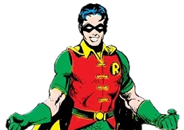
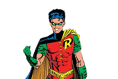
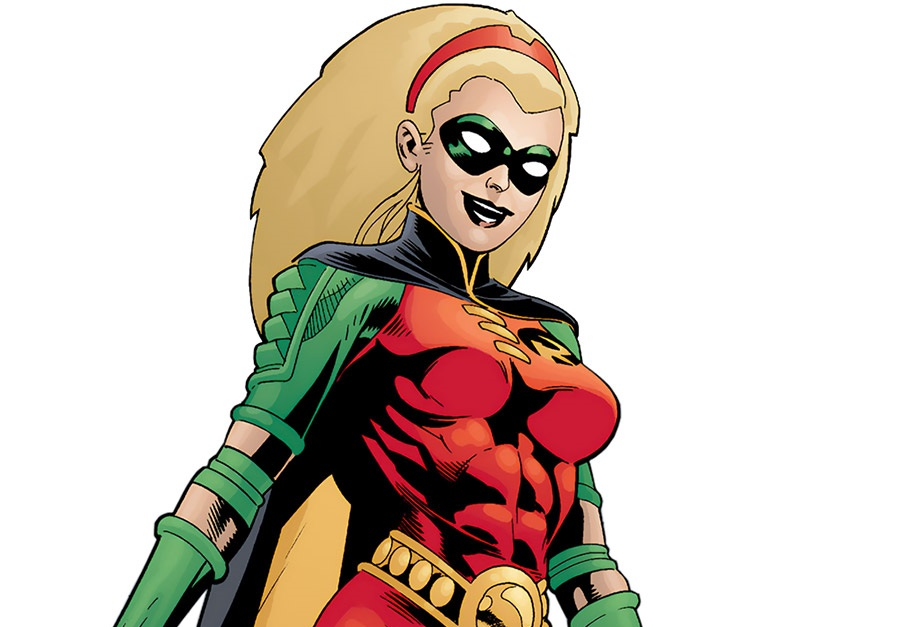
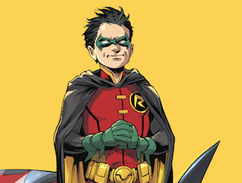

Richard Grayson
The First Robin. An acrobat who was Adopted by Batman after his parents were murdered.

Jason Todd
The Second Robin. An orphan who was adopted by Batman after Richard Grayson left.

Tim Drake
The third Robin. Joined Batman as Robin after discovering the secret identities of Nightwing and Batman.

Stephanie Brown
The fourth Robin. Assisted Batman in defeating her father, a supervillan known as the Cluemaster. Became the fourth Robin after Tim's father made him retire from the role.

Damian Wayne
The fifth Robin. The only biological son of Batman. Trained to be an assasin by his mother, Damian joined Batman to redeem himself.
| Name | Aliases | ||
|---|---|---|---|
| Grayson | Robin | Nightwing | Batman |
| Todd | Robin | Red Hood | empty |
| Drake | Robin | Red Robin | |
| Brown | Robin | Spoiler | Batgirl |
| Wayne | Robin |